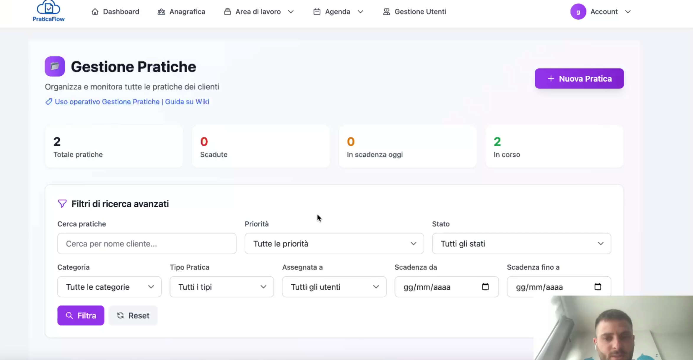

Lista Pratiche in PraticaFlow: filtri, priorità e scadenze sempre sotto controllo

Quando le pratiche diventano tante, serve una lista che metta ordine. In PraticaFlow la Lista Pratiche è pensata per lavorare veloce su grandi volumi: filtri, ordinamenti, priorità e scadenze in evidenza.
Con la ricerca istantanea e i collegamenti intelligenti, passi subito al dettaglio che ti serve, senza saltare tra mille schermate.
Cosa puoi fare nella Lista Pratiche
- Filtrare per stato (aperta/chiusa), priorità, categoria, operatore, scadenza.
- Ordinare per data, urgenza o ultimo aggiornamento.
- Cercare in un attimo per cliente, codice pratica o parole chiave.
- Accedere al dettaglio pratica e ai documenti con un click.
Routine consigliata per non perdere scadenze
- Applica il filtro “Scadenze imminenti” e risolvi prima ciò che brucia.
- Ordina per priorità alta e assegna i task al team.
- Controlla le pratiche in stand-by e sblocca ciò che manca (documenti, pagamenti, appuntamenti).
- Chiudi le pratiche completate per mantenere la lista pulita.